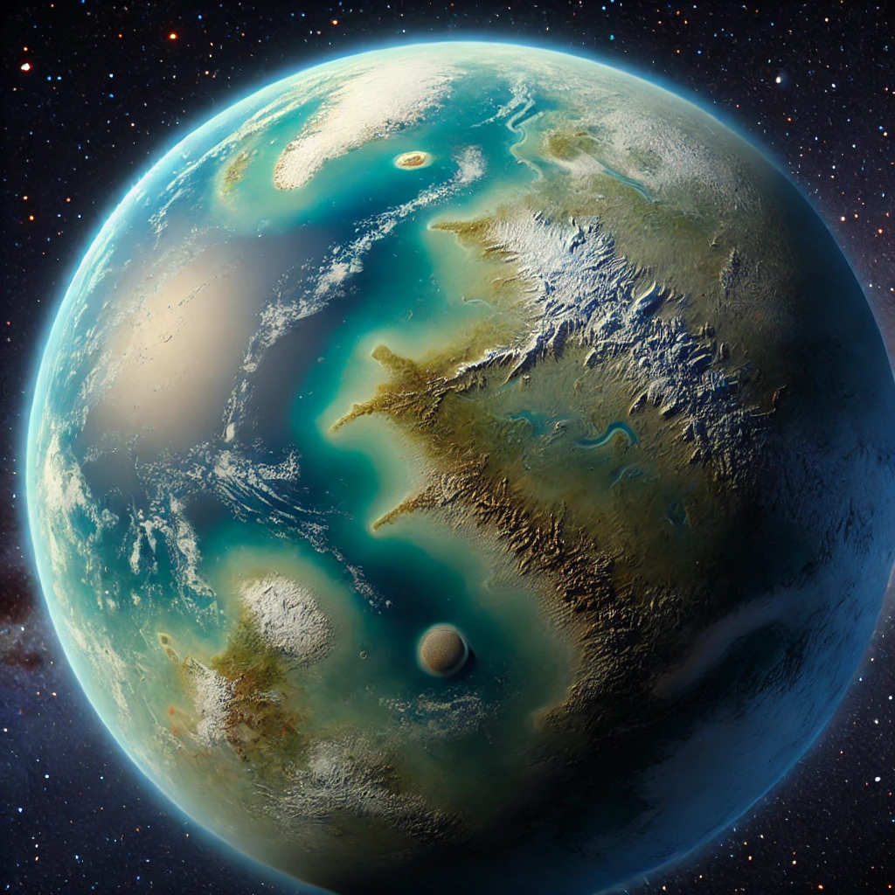
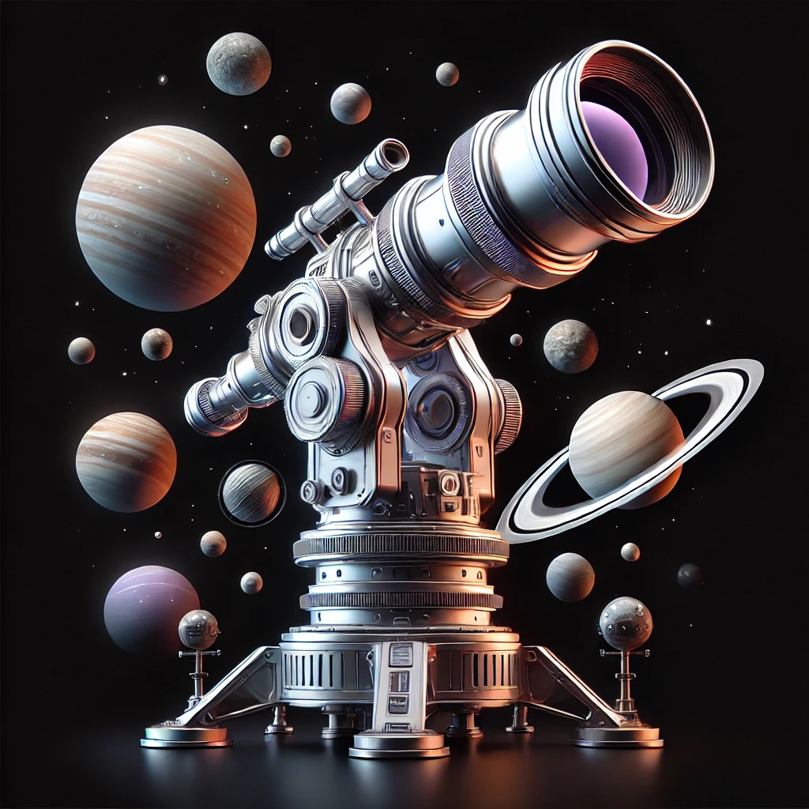
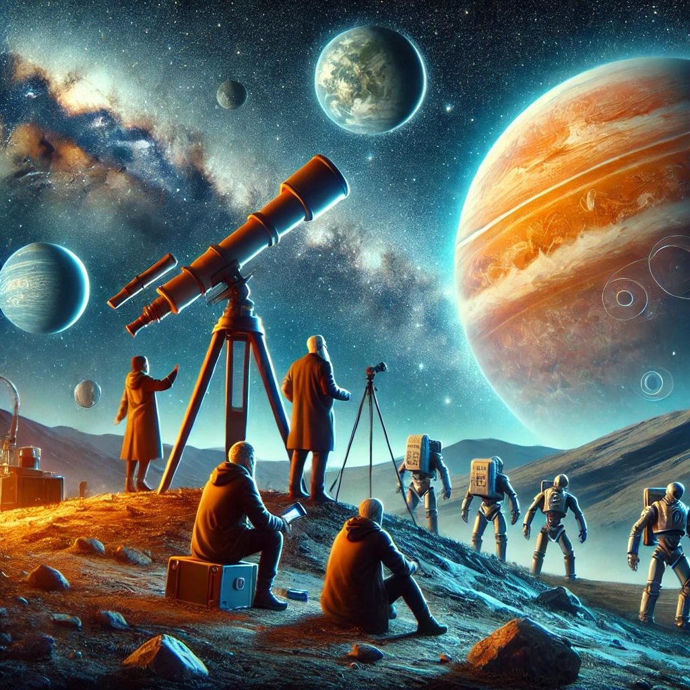

Scoperta di un Nuovo Pianeta Abitabile
Un team di astronomi internazionali ha annunciato la scoperta di un nuovo pianeta che potrebbe essere abitabile. Situato a circa 100 anni luce dalla Terra, il pianeta presenta condizioni simili a quelle del nostro pianeta.
Dettagli della Scoperta
Il pianeta, denominato "Exoplanet 12b", orbita attorno a una stella simile al nostro Sole. Gli scienziati hanno rilevato la presenza di acqua nell'atmosfera e temperature che potrebbero consentire la vita come la conosciamo.
La scoperta è stata possibile grazie all'uso di telescopi di ultima generazione e di tecniche avanzate di rilevamento. Gli astronomi sono entusiasti e prevedono ulteriori studi per determinare la reale abitabilità del pianeta.
Implicazioni e Futuro
La scoperta di Exoplanet 12b apre nuove possibilità per la ricerca di vita extraterrestre. Gli scienziati sperano che questa scoperta possa portare a una maggiore comprensione dell'universo e delle condizioni necessarie per la vita.
Le prossime missioni spaziali potrebbero includere l'invio di sonde per esplorare il pianeta più da vicino, portando con sé strumenti avanzati per analizzare la sua atmosfera e superficie.